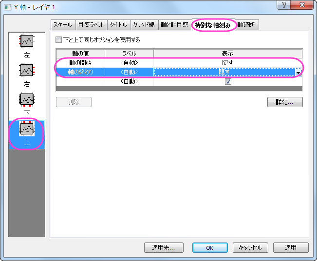
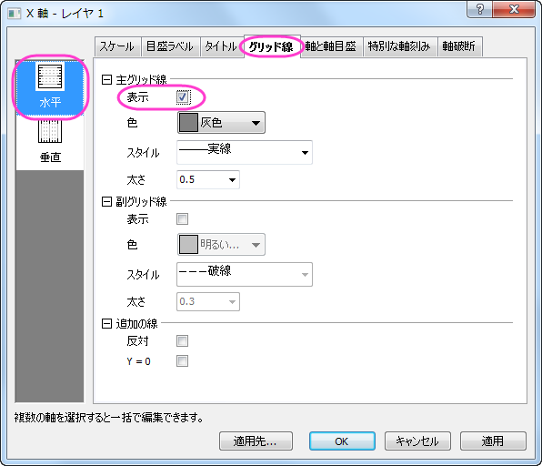

複数データのドットチャート
MultiDataDot-Chart
サマリー
ドットチャートは、シンプルなスケール上にプロットしたデータポイントで構成される統計グラフです。これは量を簡単に比較できるので、円グラフに代わるものとしても使われます。このチュートリアルでは、ドットチャートの作成方法を説明します。

必要なOriginのバージョン: Origin 2015 SR0以降
学習する項目
このチュートリアルでは、以下の項目について解説します:
- 散布図を作成する
- X-Y軸を変更する
- レイヤ管理を使う
- 軸を編集する
- グラフにオブジェクトを追加する
ステップ
以下のデータは複数の場所により異なる元素の含有量を示します。このデータを基に複数データのドットチャートを作図します。
| Sulphate |
0.346 |
0.560 |
0.333 |
0.887 |
0.310 |
0.899 |
| Nitrate |
0.382 |
0.780 |
0.456 |
0.732 |
0.456 |
0.732 |
| Chloride |
0.441 |
0.880 |
0.120 |
0.656 |
0.221 |
0.673 |
| Ammonium |
0.481 |
0.900 |
0.256 |
0.890 |
0.434 |
0.825 |
- 標準ツールバーの新規ワークブックアイコンをクリックし、新規ワークブックを作成してデータを入力します。
- 列Bの一番最初のセルにカーソルを移動し、カーソルが下向き矢印になる場所を見つけます。クリックして列Bを全て選択し、ドラッグして列Cも選択します。メニューから作図：基本の2Dグラフ：散布図を選択して、グラフを作成し、グラフ操作：X軸とY軸の交換を選びます。散布図を作成するもうひとつの方法は、2Dグラフギャラリーツールバーの散布図アイコンをクリックする方法です。
- ステップ2をそれぞれ列Dと列E、列Fと列Gに対して繰り返し、合計3つのグラフを作成します。
- 3つのグラフを統合するには、Orginメニューからグラフ操作：グラフウィンドウの統合と操作してダイアログを開きます。開いたダイアログで、配置の設定の項目の下にある行の数を3にし、列の数を1に設定します。右側にあるプレビューウィンドウで3つのグラフがどのように配置されるか、どのレイヤのグラフかが表示されます。OKボタンをクリックして保存します。これで3つの異なるレイヤと別々のグラフを含む新しいグラフが出来ます。
- グラフを見やすくするために凡例と軸タイトルをクリックで選択してからDeleteキーを押すことで削除します。

- グラフ操作：レイヤ管理 をメインメニューから開きます。左側のパネルで、Layer 2を選びます。右側パネルでリンクタブを開き、リンク先に1を設定します。これは、レイヤ2(2番目のグラフ)のY軸の内容をレイヤ1(1番上のグラフ)にリンクします。Y
軸リンクに直接(1対1)を設定し、2つのグラフのY軸が同じ表示になるようにします。適用ボタンをクリックします。
ドラッグして位置を変えると関連のレイヤも位置が変わる、にチェックを付けますこの設定は、片方の軸が移動した場合、もう1つも同じように移動するように設定できます。
- 左側パネルでレイヤ3を選択し、上記のステップを繰り返します。 OKボタンをクリックして変更を保存します。
- X軸とY軸を再設定します。まずはレイヤ1がアクティブになっていることを確認するため、グラフの左上にある1をクリックします。グラフレイヤの水平軸をクリックします。スケールタブで水平アイコンが選択されていることを確認してから、以下のように設定します（レイヤの軸は先ほどの手順でリンクしたため、ここの編集内容は3つの軸全てに反映します）。
- 軸と軸目盛タブを開きます。左側パネルで上アイコンを選択し、軸と軸目盛を表示にチェックを付けて上Y軸を表示するようにします。それぞれのスタイルを、主目盛は外側、副目盛はなしに設定します。
- 左側パネルで下アイコンを選択し、軸と軸目盛タブで主目盛と副目盛のスタイルをどちらもなしに設定して目盛りを設定させません。
- 右側パネルで目盛ラベルタブを開きます。左側パネルで上アイコンを選択し、表示チェックを付けます。
- 特別な軸刻みタブを開いて左側パネルで上アイコンを選択します。軸の開始と軸の終わり、両方の表示を隠すに設定します。
- 
- 目盛ラベルタブを開きます。左側パネルで上アイコンを選択し、表示のチェックを外します。
- 目盛ラベルタブを開きます。左側パネルで下アイコンを選択し、表示のチェックを外します。
- 軸と軸目盛タブを開きます。左側パネルで左アイコンをクリックし、左と右で同じオプションを使用する、にチェックをつけます。そして、主目盛と副目盛のスタイルはなしに設定します。
- グリッド線タブを開きます。左側パネルで水平アイコンを選択し、主グリッド線の下の表示にチェックをつけます。
- 
- OKボタンをクリックして設定を適用し、軸ダイアログを閉じます。下図のようなグラフになります。

- レイヤ1で右クリックして、フォーマットのコピー：すべてのスタイルフォーマットを選択します。グラフページ内で右クリックし、フォーマットの貼り付けを選択してレイヤ1のスタイルをページ全体に反映させます。
- レイヤ2の上軸上でダブルクリックして、軸と軸目盛タブを開きます。左側パネルで上アイコンを選択し、主目盛と副目盛のスタイルをなし設定します。レイヤ3の上軸に対しても同じように設定します。
- レイヤ3の軸ダイアログで、軸と軸目盛タブを開きます。左側パネルで下アイコンを選択し、主目盛のスタイルを外側に設定します。
- 目盛ラベルタブを開きます。左側パネルで下アイコンを選択し、表示のチェックをつけます。
- 特別な軸刻みタブを開いて左側パネルで下アイコンを選択します。軸の開始と軸の終わり、両方の表示を隠すに設定します。OKをクリックします。
-
- 下図のようなグラフになります。

- グラフをダブルクリックして、作図の詳細ダイアログを開きます。以下のように他の設定を編集します。編集モードを独立にすると、シンボルをレイヤとデータごとに個別に編集できるようになります。シンボルの形状に関しては、カスタムコンストラクションのチェックを外すとドロップダウンの三角矢印から選択できるようになります。シンボルの色はシンボルタブでシンボルの色オプションから指定色を選び、更に目的の色を選択します。
- レイヤ2と3について、前の操作（ステップ24）を繰り返します。OKボタンをクリックすると、グラフは以下のようになります。
- プロット操作・オブジェクト作成ツールバーの
 ボタンをクリックし、グラフに3つの四角形を描きます。各四角形に対して以下の操作をします。
ボタンをクリックし、グラフに3つの四角形を描きます。各四角形に対して以下の操作をします。
- 四角形をダブルクリックし、オブジェクト表示制御ダイアログを開きます。
- 塗りパターンタブを開き、塗りつぶしの色を設定します。この色が作成した長方形の色になります。
- 大きさタブで、四角形のサイズと位置を調整します。

- 「プロット操作オブジェクト作成」ツールバーのテキストツールを選び、テキストを入力する四角形の内側をクリックします。
- シンボルに対する凡例を作成するには、メインメニューでグラフ操作：凡例：データプロットと操作します。適切な位置に凡例を移動し、右クリックをしてオブジェクトの表示制御を選択します。下図のように設定を変更します。
- レイヤ1の上X軸をアクティブにし、適切な位置に移動します。
完成した複数データのドットチャートは下図のようになります。